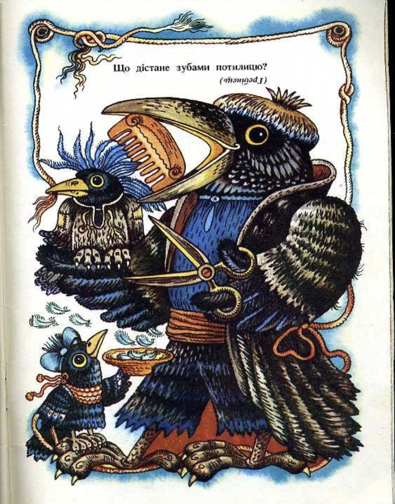

楽しみとして、子供向けのウクライナのなぞなぞを解いたり、私のお気に入りの児童書にある美しい絵を眺めたりしてみてください。
When is the sky lower than the earth? 空が大地より低く見えるのはいつ？
When you look into water / 水に映った空
A cart without wheels, with tears flowing from its whip. 車輪のない荷車、鞭から涙が流れる。
A boat and an oar / 船と櫂（かい）
A snowstorm beside the ear, and a fair inside the ear. 耳のそばでは吹雪、耳の中ではお祭り騒ぎ。
A beehive and bees / 蜂の巣と蜂
Break the ice and you find silver; break the silver and you find gold. 氷を割れば銀が出る。銀を割れば金が出る。
An egg / 卵
It danced and pranced, it shimmered and swayed, then hid beside the great stove. 跳ね回り、くねくね揺らめき、やがて大きなかまどのそばに隠れた。
A broom / ほうき
It stands in the way and bothers everyone. Whoever passes pushes it, yet no one takes it away. 道の真ん中に立って、みんなの邪魔をする。通る人は押すけれど、誰もどかそうとはしない。
A door / ドア
Who can reach the back of their head with their teeth? 歯で後頭部に届くものは何？
A comb / くし
Who always tells the truth? いつでも本当のことを言うものは何？
A mirror / 鏡
The golden one leaves, and the silver one arrives. 金色のものが去り、銀色のものがやって来る。
The sun and the moon / 太陽と月
A willow stands in the middle of the village, spreading its branches into every yard. 村の真ん中に柳が立ち、枝をすべての庭へ伸ばしている。
A road / 道

Try to solve Ukrainian riddles.